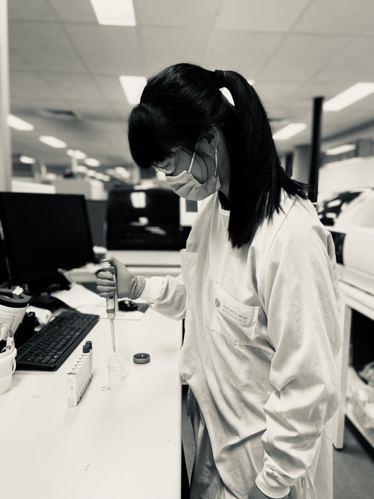

I am an aspiring web developer who loves everything about coding and
programming. I am originally from South Korea, but I have travelled to
several places and have been living in Melbourne, Australia for 8
years.
I came to Australia with one backpack and a two-month travelling plan
with the intention of learning more about fitness instructing, as I
was already a fitness instructor in Korea. But quickly, I fell so in
love with this city that I never went back home after the two months.
I have previously travelled across 11 different states in America on a
6-week road trip and have also visited Sydney, Brisbane and the
Sunshine coast in Queensland.
I have also travelled to Fukuoka in
Japan on a cruise ship from Korea. Which was a lot of fun! Gangnam
style was hitting the world back then so I did a lot of that “horse
dancing” with Japanese strangers haha!
I have also travelled to Baja in Mexico on a motorcycle! It was rough
to be on a motorcycle for a long time but was a lifetime experience!
I have always LOVED dancing since I started being able to walk. I used
to teach K-pop dance choreography back in Korea and that interest
developed further into fitness instructing later on. In fact, I have
been instructing various fitness classes at many different fitness
facilities back home and here in Melbourne city for 14 years now.
The combination of my passion for the movement of the human body
through exercises and my interest in clinical knowledge drove me to go
back to university in 2018 to study a bachelor of Health Science,
majoring in human anatomy and physiology.
Upon the completion of my
degree, I was offered a full time job at a Haematology lab where I now
help perform the full blood tests and much more! (Pretty much whatever
your doctor requests!)
As the pandemic hit in 2020, just like many of you, I was stuck at
home finishing my bachelor degree. I was also teaching dance fitness
classes via Zoom to Koreans and my gym clients here. I have realised
that not everyone was able to attend my class due to their other
commitments. Some requested if I can pre-record the classes and make
it available to them. So I attempted to make videos with the intention
of using Youtube but this later developed into an idea of “how can I
make my own platform to put all my contents where I can also make
revenue?”

I started teaching myself HTML, CSS through various online materials.
This continued even after getting a full time job. I would sit before
and after work to learn how to code. I loved learning something new
every day, being able to apply my knowledge right away, and then
seeing the results visually on the page. Also, it was extremely
rewarding whenever I was able to solve small errors in my code!
I believe technology can have such a huge impact on so many lives in a
positive way. I am really excited to bring the skills I have developed
through my life experiences and previous jobs into web development.